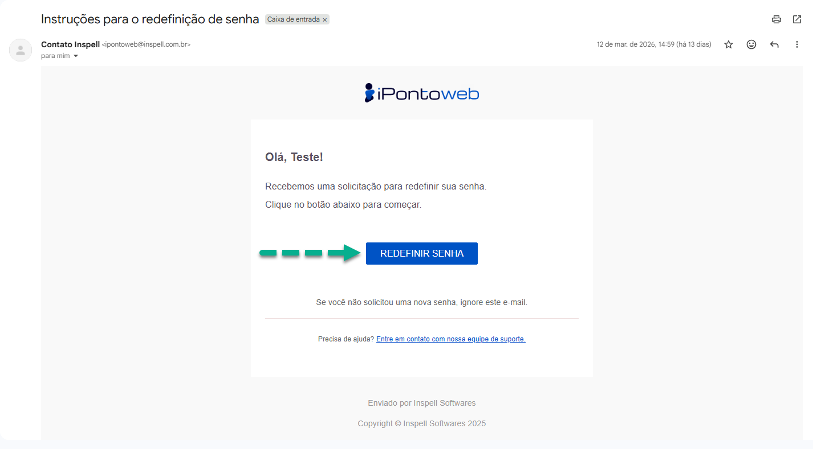

Recuperação da Senha de Acesso
Aplicação
Através desse processo, o usuário realiza a recuperação da senha de acesso utilizada para logar no iPonto Web.
Requisitos
Para recuperar a senha de acesso é necessário ter:
- O e-mail utilizado durante o processo de registro.
Execução
- Acesse a página de recuperação de senha do iPonto Web Clicando Aqui.
Interface de Acesso ao Sistema - Login
{kind=link}
- No formulário exibido na tela, insira o e-mail utilzado durante o processo de cadastro, e então clique no botão "Enviar Link", para encaminhar, ao e-mail inserido, o link de recuperação da senha.
Interface de Acesso ao Sistema - Recuperação de Senha
{kind=link}
Atenção
Caso o e-mail utilizado durante o processo de registro seja inválido, ou esteja incorreto, impedindo o envio do link de recuperação, procure a nossa equipe de suporte para realizar a troca!
- Após realizar o processo de envio do link de recuperação, acesse na caixa de entrada do seu e-mail, a mensagem enviada pelo sistema, e então clique no botão "Redefinir Senha" para iniciar o processo de troca da sua senha.

Provedor de E-mail - Mensagem de Recuperação de Senha
{kind=link}
- Na nova tela que se abrirá em seu navegador, insira, no formulário exibido, a nova senha que que será utilizada para acessar o sistema, atentando-se para escolher uma senha segura e fácil de lembrar. Em seguida, clique no botão "Gravar Nova Senha", e o sistema irá te redirecionar automaticamente para a página de login, onde você poderá usar sua nova senha para acessar a plataforma.
Interface de Acesso ao Sistema - Alteração de Senha
{kind=link}